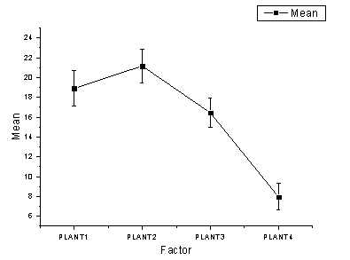

Einfache ANOVA
1WayANOVA
Zusammenfassung
Die Statistikanalyse verfügt über zwei Modi der Dateneingabe: Index- und Rohdaten. Wenn eine statistische Analyse durchgeführt wird, besteht normalerweise keine Notwendigkeit, einen gesamten Datensatz zu verwenden; Origin bietet mehrere Methoden der Datenauswahl. Die Datenauswahl kann über die Schaltfläche des interaktiven Datenselektors (grafisch) oder mit dem Dialog Spaltenbrowser durchgeführt werden.
In diesem Tutorial erfahren Sie, wie Sie die zwei Methoden der Dateneingabe verwenden, so dass der statistische Test der Varianzanalyse (ANOVA) durchgeführt werden kann.
Eine ANOVA ist eine parametrische Methode zum Vergleichen der Mittelwerte von mehreren Gruppen. Außerdem stellt sie eine Erweiterung des t-Tests von zwei unabhängigen Stichproben dar. Eine ANOVA ist leistungsstärker als ein multipler t-Test, da sie die Wahrscheinlichkeit, dass ein Fehler der Fehlerart I auftritt, besser kontrollieren kann, wenn die Anzahl der Gruppen relativ groß ist. Wenn Sie beispielsweise die Mittelwerte von 5 Gruppen mit Hilfe eines t-Tests vergleichen, zehn multiple t-Tests, dann wird jeder mit einem Signifikanzniveau von 0,05 durchgeführt, was zu einer Gesamtwahrscheinlichkeit von 1-(1-0,05)^10=0,401 führt, dass ein Fehler der Fehlerart I auftritt. Unter den gleichen Umständen beträgt die Wahrscheinlichkeit, dass es Fehler der Fehlerart I auftritt, bei einer ANOVA 0,05.
Die ANOVA erfordert normalverteilte Daten und gleiche Varianzen. Werden diese Anforderungen nicht erfüllt, sollte eine nichtparametrische Analyse verwendet werden.
Origin-Version mind. erforderlich: Origin 2016 SR0
Was Sie lernen werden
Dieses Tutorial zeigt Ihnen, wie Sie:
- verschiedene Modi der Dateneingabe im statistischen Analysedialog verwenden
- Tests auf Normalverteilung durchführen
- Einfache ANOVA durchführen
Schritte
Origin kann eine ANOVA mit indizierten oder Rohdaten durchführen.
Wenn der Indexdatenmodus verwendet wird, müssen die Daten in einer Faktorspalte und einer Datenspalte organisiert sein.
-
Wenn der Rohdatenmodus verwendet wird, müssen die Daten mit verschiedenen Stufen in verschiedenen Spalten organisiert sein.
Modus Indexdaten
Der Stickstoffgehalt in Milligramm wurde für 4 Pflanzenarten aufgezeichnet. Wir interessieren uns dafür, ob verschiedene Pflanzen signifikant unterschiedliche Stickstoffgehalte haben. Daher verwenden wir die Daten im Indexmodus im Rahmen einer einfachen ANOVA.
- Öffnen Sie eine neue Arbeitsmappe und wählen Sie Hilfe: Ordner öffnen: Sample-Ordner ... im Menü, um den Ordner "Samples" zu öffnen. Öffnen Sie in diesem Ordner den Unterordner Statistics. Dort befindet sich die Datei nitrogen.txt. Ziehen Sie diese Datei per Drag&Drop in das leere Arbeitsblatt, um sie zu importieren.
- Zuerst führen wir einen Test auf Normalverteilung für jede Datengruppe durch, um zu bestimmen, ob die Daten normalverteilt sind. Markieren Sie die erste Spalte der Arbeitsmappe und wählen Sie im Menü Arbeitsblatt: Worksheet sortieren: Aufsteigend.
- Wählen Sie im Menü Statistik: Deskriptive Statistik: Test auf Normalverteilung: Dialog öffnen. Erweitern Sie im Dialog Test auf Normalverteilung auf der Registerkarte Eingabe den Zweig Eingabedaten und Bereich 1. Klicken Sie auf die dreieckige Schaltfläche rechts von Datenbereich und wählen Sie B(Y): nitrogen. Klicken Sie dann auf die dreieckige Schaltfläche rechts von Gruppe und wählen Sie A(X): plant. Klicken Sie auf OK.
-
- Gehen Sie bei aktivem Arbeitsblatt nitrogen im Menü auf Statistik: ANOVA: Einfache ANOVA. Legen Sie im Dialog ANOVAOneWay auf der Registerkarte Eingabe die Eingabedaten auf Indiziert fest. Klicken Sie auf die dreieckige Schaltfläche rechts von Faktor und wählen Sie A(X): plant. Klicken Sie dann auf die dreieckige Schaltfläche rechts von Daten und wählen Sie B(Y): nitrogen.
-
- Aktivieren Sie auf der Registerkarte Mittelwertevergleich das Kontrollkästchen Tukey. Aktivieren Sie auf der Registerkarte Test auf gleiche Varianz das Kontrollkästchen Levene. Aktivieren Sie auf der Registerkarte Trennschärfeanalyse das Kontrollkästchen Tatsächliche Trennschärfe. Aktivieren Sie auf der Registerkarte Diagramme die Kontrollkästchen Mittelwertdiagramm [StAbw als Fehler] sowie Mittelwertvergleichsdiagramm. Klicken Sie auf OK.
Ergebnisinterpretationen
- Im Berichtsblatt ANOVA1Way1 sehen Sie einen Zweig Homogenität des Varianztests. Wenn die Ergebnisse nicht sichtbar sind, klicken Sie auf den Knoten, um den Zweig zu erweitern. Da der p-Wert größer als 0,05 ist, wird davon ausgegangen, dass die vier Gruppen die gleiche Varianz haben.
- Die ANOVA-Tabelle (ANOVA gesamt) zeigt einen p-Wert an, der kleiner ist als 0,05. Daher haben mindestens zwei der vier Gruppen signifikant unterschiedliche Mittelwerte.
- Durch Erweitern der Ergebnisse unter "Mittelwertvergleiche" werden weitere Informationen hinsichtlich der Verhältnisse zwischen den Gruppen aufgeführt.
- Hier sehen Sie, dass der Mittelwert von PLANT4 sich signifikant von den anderen drei Gruppen unterscheidet. Durch Betrachten des Mittelwertdiagramms und des Mittelwertvergleichsdiagramms können wir erkennen, dass PLANT4 den kleinsten Mittelwert hat und signifikant unterschiedlich ist von den anderen drei Gruppen.
- 

- In der Tabelle "Trennschärfen" beträgt die Tatsächliche Trennschärfe = 0,99976, das heißt, die Wahrscheinlichkeit, dass ein Fehler der Fehlerart II auftritt, ist fast gleich null.
Modus Rohdaten
- Öffnen Sie eine neue Arbeitsmappe und wählen Sie Hilfe: Ordner öffnen: Sample-Ordner ... im Menü, um den Ordner "Samples" zu öffnen. Öffnen Sie in diesem Ordner den Unterordner Statistics. Dort befindet sich die Datei nitrogen_raw.txt. Ziehen Sie diese Datei per Drag&Drop in das leere Arbeitsblatt, um sie zu importieren.
- Wählen Sie Statistik: ANOVA: Einfache ANOVA.
- Setzen Sie auf der Registerkarte Eingabe die Eingabedaten auf Roh und dann die Anzahl der Ebenen auf 4.
- Klicken Sie auf die Schaltfläche zum Navigieren
 rechts von Daten und wählen Sie Aus Arbeitsblatt wählen. Der Dialog wird minimiert.
rechts von Daten und wählen Sie Aus Arbeitsblatt wählen. Der Dialog wird minimiert.
- Markieren Sie alle vier Spalten (Plant1, Plant2, Plant3, Plant4) und klicken Sie auf dem minimierten Dialog auf Fertig. Klicken Sie auf OK, um die ANOVA durchzuführen.
- Untersuchen Sie die Analyseergebnisse und Sie werden sehen, dass wir zu denselben Schlussfolgerungen kommen wie bei Verwendung des Modus der indizierten Daten.
 |
Wenn der Stufenname auf Auto gesetzt ist, übernimmt er den Spaltenlangnamen der ausgewählten Daten.
|